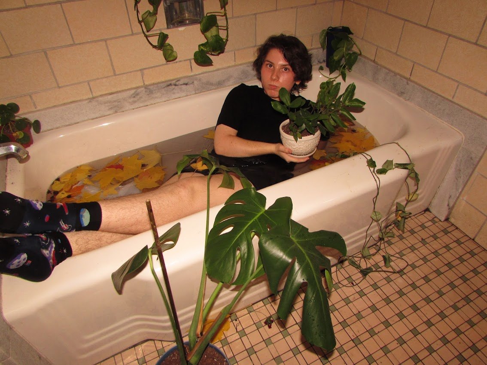
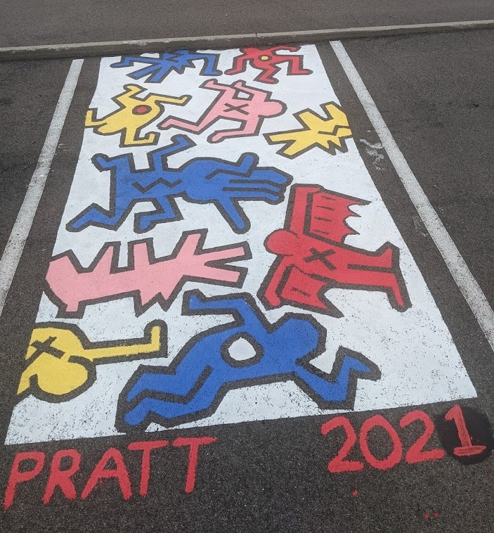
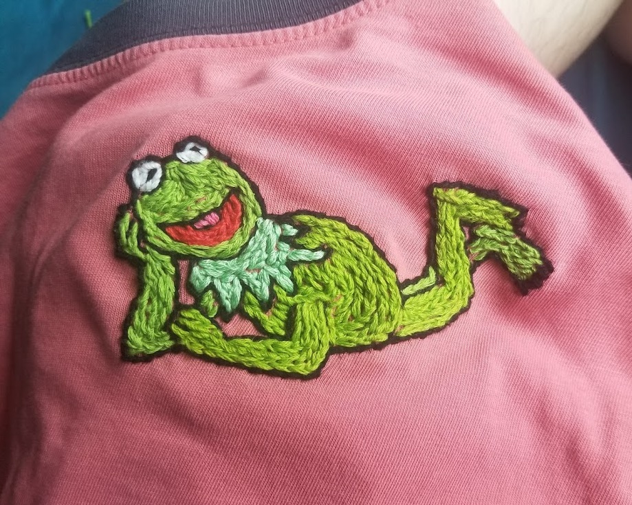

Since arriving at Pitt, I’ve made a lot of linocut prints at the Text and Context center in Hillman. They have a lot of wonderful creative resources.
I like to take pictures with my parents’ old camera. My favorite photography idea of mine was recreating a famous painting of Hamlet’s Ophelia in the Lothrop bathtubs.

I painted my senior parking space based on Keith Haring’s work. I used chalk to sketch it out, put down tape to preserve black lines, and filled in the shapes with paint. I used so much tape that my fingerprints apparently tore off; I wasn’t able to use my phone’s fingerprint detector for a few days afterwards.
I also dabble in needlepoint! I put Kermit on this shirt that I bought from a thrift store.
